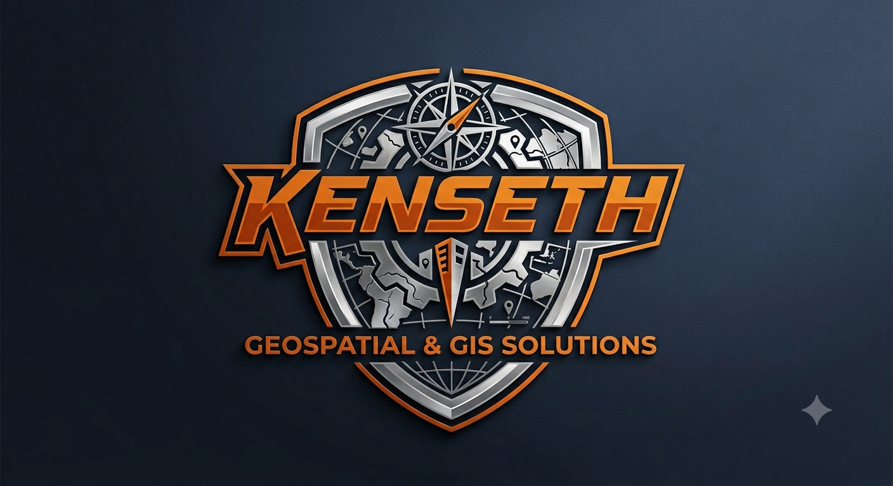

Enterprise Spatial Analytics & Environmental Consulting
Providing precision geographic data engineering, advanced cartographic compilation, and environmental analysis workflows for sustainable planning and development.
50+
Spatial Datasets Mapped
100%
Publication-Ready Quality
24/7
Client Support & Delivery
Our Professional Services
Deploying spatially integrated frameworks to support terrestrial ecosystem monitoring, afforestation planning, and sustainable resource management.
Geographic Information Systems (GIS)
Advanced vector spatial processing, coordinate transformations, custom layout classification, and digital mapping solutions tailored to infrastructure assessment.
Remote Sensing & Spatial Analysis
Multi-temporal Land Use and Land Cover (LULC) change detection analysis, multi-spectral satellite imagery classification, and demographic distribution modeling.
Environmental Studies & Consulting
Sustainable solid waste management analytics, hydrology mapping, watershed delineations, and baseline regional development assessments across urban informal settlements.
Inland Water Bodies & River Basin Assessments
Hydrological modeling, surface water extent monitoring, riparian buffer analysis, lake level variability tracking, and watershed management assessments across Kenyan catchments.
Environmental Fieldwork & Geographic Focus

Terrestrial Ecosystem & Forest Canopy Restoration
Field survey and spatial monitoring focused on terrestrial reforestation, vegetation density mapping, and canopy cover changes to support ecosystem rehabilitation and climate resilience in Arid and Semi-Arid Lands (ASALs).